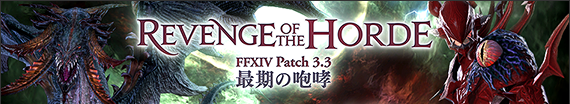
FF14 patch3.3 任务列表
更新笔记
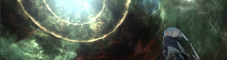
【主线】
「深处的灵魂」
伊修加德砥柱层 (X:11.5 Y:11.2) NPC“福尔唐家的骑兵”
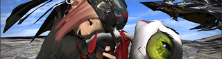
【禁忌城邦玛哈 关联】
「禁忌城邦玛哈」
阿巴拉提亚云海 (X:6.2 Y:5.8) NPC“斯塔西娅”
平均装等高于205～
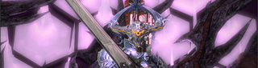
【三斗神关联】
「赌上行星的命运」
石之家 (X:6.1 Y:5.2) NPC“蛇心”
【事件屋】
「神奇的能力」
伊修加德基础层 (X:9.9 Y:11.4) NPC“齐尔”
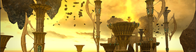
【新四人本：天龙宫殿 忆罪宫】
「圣龙的试炼」
龙堡参天高地 (X:16.7 Y:23.2) NPC“阿尔菲诺”
平均装等高于200～
3.3版本第三个主线任务解放
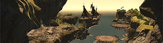
【新四人本：黑涡传说 破舰岛】
支线任务「惊涛骇浪 破舰岛」
利姆萨·罗敏萨 上层甲板 (X:11.0 Y:10.4) NPC“登斯顿”
平均装等高于200～
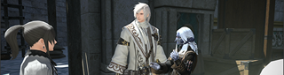
【元灵武器 关联】
「培育人造元灵」
魔大陆 阿济兹拉 (X:7.4 Y:11.5) NPC“阿尔达希尔”
【蛮族任务:莫古力族】
「困扰人类的修复团！」
翻云雾海 (X:27.2 Y:34.5) NPC“愤怒的石匠”
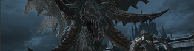
【尼德霍格征龙战】
「诗的终章」
翻云雾海 (X:7.4 Y:26.7) NPC“艾默里克”
平均装等高于205～
3.3版本第四个主线任务解放
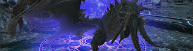
【尼德霍格传奇征龙战】
「英雄叙事诗：云廊之章」
摩杜纳 (X:21.7 Y:8.6) NPC“阿莉茜”
平均装等高于220～
完成3.3版本的主线任务后解放
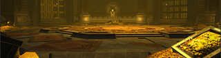
「水城 宝物库」
打完「巨龙革藏宝图」的时候偶尔会出现「传送魔纹」调查后可进入
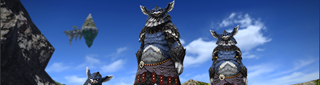
瓦努族的蛮族商店追加新的道具。
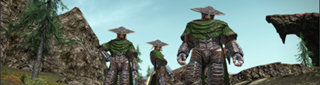
骨颌族的蛮族商店追加新的道具。
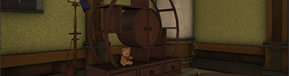
追加新的家具
追加可以在屋内栽培的调度品「花盆」
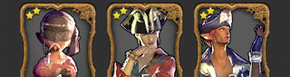
追加新的九宫幻卡
追加新的九宫幻卡对战NPC
追加金蝶币兑换物品
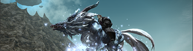
芬里尔可飞行
追加新的发型
追加新的情感动作。
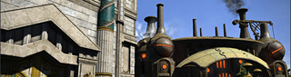
田园郡部分完善且增加新的建筑
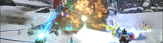
「荣誉野(碎冰战)」
「法外纷争（黑涡团）」
利姆萨·罗敏萨 上层甲板 (X:12.7 Y:12.8) NPC“特拉哈雷特”
「法外纷争（双蛇党）」
格里达尼亚新街 (X:9.9 Y:11.4) NPC“斯卡利特”
「法外纷争（恒辉队）」
乌尔达哈现世回廊 (X:8.6 Y:9.4) NPC“弥弥奥”
※开放过所有战场的话，就不用接这个任务了是直接开的